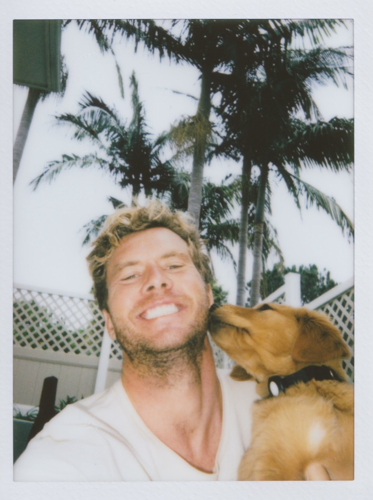

About
Hi, I'm Brandon —
I love building things.
I live in San Diego, where I spend my time surfing, making music, drinking too much coffee, and creating things. Making stuff is just how I'm wired — it's always been the thing I can't not do.
Here's a little about how I got here.

The two books
One looked like math. The other spoke to me.
Ever since I was a kid I loved computers and technology — but I was always more drawn to design than engineering. I remember standing in the computer section of a bookstore when I was probably twelve, looking at two books: one on Xcode, and one on design.
I opened the Xcode book first. All the numbers and symbols confused me — it looked way too complicated, like a lot of math. And I was bad at math. So I put it down and opened the design book instead.
It was beautiful, and it spoke to me. I learned the difference between a bitmap and a vector graphic, about color palettes, about fonts. I fell in love right there, and for years almost everything I did on a computer lived in that world.
A Mac changed my life
I found the machine I wanted to live in.
Then I discovered a Mac, and it genuinely changed my life. I loved the beautiful interface, the applications, all of it — it felt like a place made for people who cared about how things looked and felt.
I mostly worked on video, graphic design, and photos. I'd build little websites for friends and for ideas I had — nothing crazy, and a couple for businesses. Design first, always.
A dream job, and music
I got to work around the things I loved.
In college — and in the years right after — I landed what honestly felt like a dream job. I got to work at Red Bull and in the music world, surrounded by creative people and big ideas, doing the kind of work I'd have happily done for free.
That stretch shaped how I think about everything since. Ever since, I've been building things around the stuff I love — music, design, the web — instead of waiting around for permission to make them.
Building things for real
I learned software by building PerDiem.
Eventually I had an idea for an app I really wanted to build. My sister and I went deep into actually making apps, and it was hard.
Then I met an engineer from Google who wanted to work on a project with me. Together we built a site for investing in music called PerDiem. It was an incredible time — I learned so much from him about software: how to use GitHub, the basics of how it all fits together. He did the backend, and I did the front end.
The UX and UI came naturally to me. The backend did not — not at all. Over the years that became the pattern: I'd work with developers who built the backend while I designed and built the front end. But it was slow, and depending on the project it could get very expensive.
Then the tools caught up
Suddenly I could build the whole thing.
Around 2023 a big shift happened: ChatGPT released data analysis, which could actually help write code. Then near the end of 2025, when Codex dropped, everything changed.
These tools could suddenly do a huge amount of the heavy lifting — and as of 2026, they can do almost all of it. The part that used to require an engineer, a budget, and a lot of waiting was now something I could do myself.
Now any idea you have, you can build with these tools — with enough determination and creativity. That's the whole reason this site exists.
Why I'm sharing this
There's nothing cooler than helping an idea come to life.
I've always loved sharing how I make things, and I get asked about my process all the time. I may not have the best approach to any of this — but it's an approach that works for me.
If someone can take something from it, that's very cool. There's nothing better than helping a person bring their idea to life, and my goal here is to use this to do more of that.
The simplest version
I make things I'd want to use, and I try to make them fast.
A Mac, a few free tools, AI doing the heavy lifting, and a habit of getting things in front of people early. If that sounds like the way you want to build too, the How I Code page is exactly how I do it.
See how I code